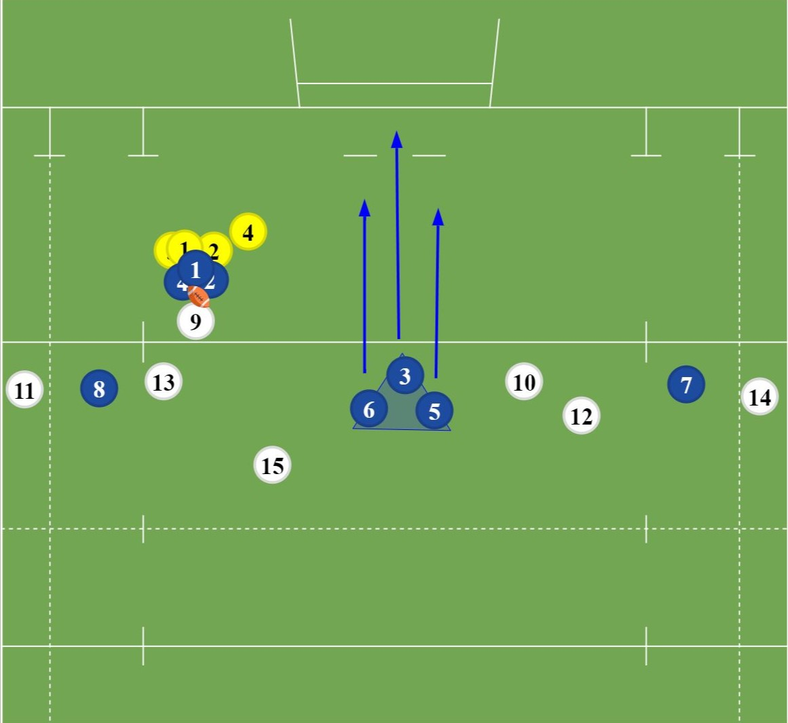
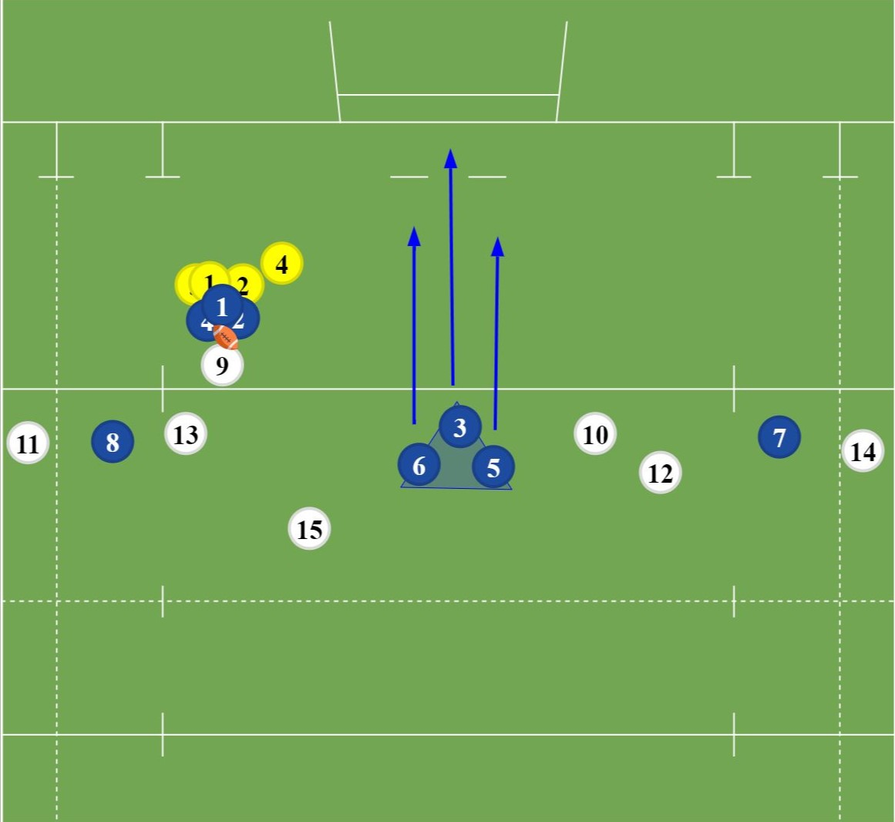

Click on the left photo for the Attacking Blind Side Winger, the middle photo for the Attacking Lineout and the right photo for the Pods
The blind side winger is a move set of a set piece like the scum or lineout. It is used to create an overlap on the outside for the backs to exploit and potentially score. The Linout move is used in the final third of the pitch. It is used to create a whole in the lineout to send a forward flying in and hopefully score. The Pods is a move in open play, used to gradually make your way up the pitch through the use of the forwards.